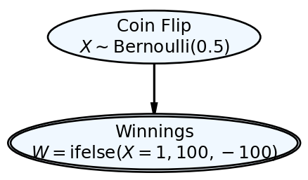
Generative Models and Simulation
Recipes for Simulating Synthetic Data from Assumptions
📈 Generative Models and Simulation
What is a Generative Model?
Definition: Generative DAG
A generative DAG is a mathematical object (a directed acyclic graph) where nodes are random variables (or computed from random variables) and arrows show which random variables need to be computed before others. It serves as a step-by-step recipe for simulating synthetic data from assumptions.
Node Types (Only Two)
Stochastic Nodes (Random Draws)
Instruction: “Draw from a distribution.”
Notation: e.g. \(x \sim \text{Bernoulli}(\theta)\)
Recipe analogy: “Take a random scoop from this bowl.”
Deterministic Nodes (Functions)
Instruction: “Compute from inputs.”
Notation: = e.g. \(W = \begin{cases} 100 & \text{if } X = 1 \\ -100 & \text{if } X = 0 \end{cases}\)
Recipe analogy: “Mix these ingredients using this rule.”
Example: $100 Bet on a Coin Flip
R Syntax (ifelse)
Python Syntax (ternary)
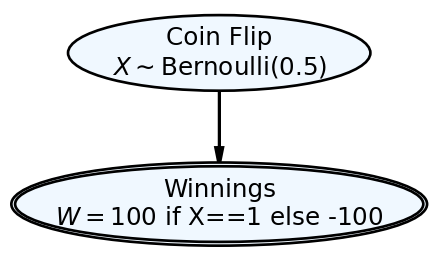
Simulation Recipe in R and Python
library(tidyverse)── Attaching core tidyverse packages ──────────────────────── tidyverse 2.0.0 ──
✔ dplyr 1.1.4 ✔ readr 2.1.5
✔ forcats 1.0.0 ✔ stringr 1.5.1
✔ ggplot2 3.5.2 ✔ tibble 3.3.0
✔ lubridate 1.9.4 ✔ tidyr 1.3.1
✔ purrr 1.1.0
── Conflicts ────────────────────────────────────────── tidyverse_conflicts() ──
✖ dplyr::filter() masks stats::filter()
✖ dplyr::lag() masks stats::lag()
ℹ Use the conflicted package (<http://conflicted.r-lib.org/>) to force all conflicts to become errors# Set seed for reproducibility
set.seed(123)
# Number of simulations
n_sims <- 10
# Create simulation data using tibble and tidyverse
sim_data <- tibble(
sim_num = 1:n_sims,
coin_flip = rbinom(n = n_sims, size = 1, prob = 0.5)
) %>%
mutate(
winnings = if_else(coin_flip == 1, 100, -100)
)
# Display results
sim_data# A tibble: 10 × 3
sim_num coin_flip winnings
<int> <int> <dbl>
1 1 0 -100
2 2 1 100
3 3 0 -100
4 4 1 100
5 5 1 100
6 6 0 -100
7 7 1 100
8 8 1 100
9 9 1 100
10 10 0 -100import numpy as np
import pandas as pd
# Set seed for reproducibility
np.random.seed(123)
# Number of simulations
n_sims = 10
# Step 1: Draw coin flips (stochastic node)
X = np.random.binomial(n=1, p=0.5, size=n_sims)
# Step 2: Compute winnings (deterministic node)
W = np.where(X == 1, 100, -100)
# Combine into data frame
sim_data = pd.DataFrame({
'sim_num': range(1, n_sims + 1),
'coin_flip': X,
'winnings': W
})
# Display results
sim_data sim_num coin_flip winnings
0 1 1 100
1 2 0 -100
2 3 0 -100
3 4 1 100
4 5 1 100
5 6 0 -100
6 7 1 100
7 8 1 100
8 9 0 -100
9 10 0 -100Using Simulation Output To Give Representative Samples and Use Representative Samples to Answer Questions
Example, what percentage of simulations result in a profit?
# Calculate percentage of simulations with profit (winnings > 0)
profit_percentage <- sim_data %>%
summarise(
total_sims = n(),
profitable_sims = sum(winnings > 0),
profit_percentage = round(100 * mean(winnings > 0), 1)
)
# Display results
profit_percentage# A tibble: 1 × 3
total_sims profitable_sims profit_percentage
<int> <int> <dbl>
1 10 6 60# Show the breakdown
sim_data %>%
count(coin_flip, winnings) %>%
mutate(
percentage = round(100 * n / sum(n), 1)
)# A tibble: 2 × 4
coin_flip winnings n percentage
<int> <dbl> <int> <dbl>
1 0 -100 4 40
2 1 100 6 60# Calculate percentage of simulations with profit (winnings > 0)
total_sims = len(sim_data)
profitable_sims = (sim_data['winnings'] > 0).sum()
profit_percentage = round(100 * (sim_data['winnings'] > 0).mean(), 1)
# Display results
print(f"Total simulations: {total_sims}")Total simulations: 10print(f"Profitable simulations: {profitable_sims}")Profitable simulations: 5print(f"Profit percentage: {profit_percentage}%")Profit percentage: 50.0%# Show the breakdown
breakdown = sim_data.groupby(['coin_flip', 'winnings']).size().reset_index(name='count')
breakdown['percentage'] = round(100 * breakdown['count'] / breakdown['count'].sum(), 1)
breakdown coin_flip winnings count percentage
0 0 -100 5 50.0
1 1 100 5 50.0Generating Representative Samples
So far, we have represented uncertainty in a simple coin flip - just one random variable. As we try to model more complex aspects of the business world, we will seek to understand relationships between random variables (e.g. price and demand for oil). Starting with our simple building block of drawing an oval to represent one random variable, we will now draw multiple ovals to represent multiple random variables. Let’s look at an example with more than one random variable:
Example 1 The XYZ Airlines company owns the one plane shown in Figure 4. XYZ operates a 3-seater airplane to show tourists the Great Barrier Reef in Cairns, Australia. The company uses a reservation system, wherein tourists call in advance and make a reservation for aerial viewing the following day. Unfortunately, often passengers holding a reservation might not show up for their flight. Assume that the probability of each passenger not showing up for a flight is 15% and that each passenger’s arrival probability is independent of the other passengers. Assuming XYZ takes three reservations, use your ability to simulate the Bernoulli distribution to estimate a random variable representing the number of passengers that show up for the flight.
To solve this problem, we can represent it mathematically with three random variables for individual passengers and one deterministic variable for the total:
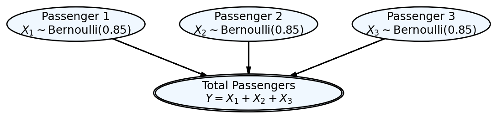
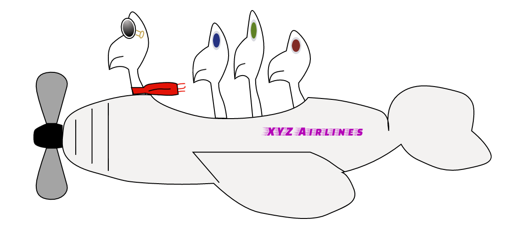
To solve this problem, we can simulate the arrival of each passenger using Bernoulli distributions and then sum them up to get the total number of passengers who show up.
library(tidyverse)
# Set parameters
numFlights <- 1000 # number of simulated flights
probShow <- 0.85 # probability of passenger showing up (1 - 0.15)
# Set seed for reproducibility
set.seed(111)
# Simulate each passenger's arrival (Bernoulli trials)
passenger1 <- rbinom(n = numFlights, size = 1, prob = probShow)
passenger2 <- rbinom(n = numFlights, size = 1, prob = probShow)
passenger3 <- rbinom(n = numFlights, size = 1, prob = probShow)
# Calculate total passengers for each flight
totalPassengers <- passenger1 + passenger2 + passenger3
# Create results data frame
flightResults <- tibble(
flightNum = 1:numFlights,
passenger1 = passenger1,
passenger2 = passenger2,
passenger3 = passenger3,
totalPassengers = totalPassengers
)
# Show first 10 flights
head(flightResults, 10)# A tibble: 10 × 5
flightNum passenger1 passenger2 passenger3 totalPassengers
<int> <int> <int> <int> <int>
1 1 1 0 1 2
2 2 1 1 1 3
3 3 1 1 1 3
4 4 1 1 1 3
5 5 1 0 1 2
6 6 1 1 0 2
7 7 1 1 1 3
8 8 1 1 0 2
9 9 1 1 1 3
10 10 1 0 0 1# Calculate summary statistics
summaryStats <- flightResults %>%
group_by(totalPassengers) %>%
summarise(
count = n(),
percentage = round(100 * n() / numFlights, 1)
) %>%
arrange(totalPassengers)
print("Distribution of total passengers:")[1] "Distribution of total passengers:"summaryStats# A tibble: 4 × 3
totalPassengers count percentage
<int> <int> <dbl>
1 0 3 0.3
2 1 44 4.4
3 2 307 30.7
4 3 646 64.6# Answer the question: What's the expected number of passengers?
expectedPassengers <- mean(totalPassengers)
cat("Expected number of passengers per flight:", round(expectedPassengers, 2))Expected number of passengers per flight: 2.6import numpy as np
import pandas as pd
# Set parameters
numFlights = 1000 # number of simulated flights
probShow = 0.85 # probability of passenger showing up (1 - 0.15)
# Set seed for reproducibility
np.random.seed(111)
# Simulate each passenger's arrival (Bernoulli trials)
passenger1 = np.random.binomial(n=1, p=probShow, size=numFlights)
passenger2 = np.random.binomial(n=1, p=probShow, size=numFlights)
passenger3 = np.random.binomial(n=1, p=probShow, size=numFlights)
# Calculate total passengers for each flight
totalPassengers = passenger1 + passenger2 + passenger3
# Create results data frame
flightResults = pd.DataFrame({
'flightNum': range(1, numFlights + 1),
'passenger1': passenger1,
'passenger2': passenger2,
'passenger3': passenger3,
'totalPassengers': totalPassengers
})
# Show first 10 flights
print("First 10 flights:")First 10 flights:print(flightResults.head(10)) flightNum passenger1 passenger2 passenger3 totalPassengers
0 1 1 1 1 3
1 2 1 1 1 3
2 3 1 1 0 2
3 4 1 1 1 3
4 5 1 0 1 2
5 6 1 1 1 3
6 7 1 1 1 3
7 8 1 1 1 3
8 9 1 1 1 3
9 10 1 0 1 2# Calculate summary statistics
summaryStats = flightResults.groupby('totalPassengers').size().reset_index(name='count')
summaryStats['percentage'] = round(100 * summaryStats['count'] / numFlights, 1)
summaryStats = summaryStats.sort_values('totalPassengers')
print("\nDistribution of total passengers:")
Distribution of total passengers:print(summaryStats) totalPassengers count percentage
0 0 2 0.2
1 1 73 7.3
2 2 300 30.0
3 3 625 62.5# Answer the question: What's the expected number of passengers?
expectedPassengers = totalPassengers.mean()
print(f"\nExpected number of passengers per flight: {expectedPassengers:.2f}")
Expected number of passengers per flight: 2.55Based on our simulation, we can see that:
- Expected number of passengers: Approximately 2.55 passengers per flight
- Most common outcome: 3 passengers show up (about 61% of the time)
- Empty seats: There’s about a 39% chance of having at least one empty seat
This makes intuitive sense since each passenger has an 85% chance of showing up, so we expect 3 × 0.85 = 2.55 passengers on average.
Visualizing the Probability Mass Function
Let’s create visualizations of the empirical probability mass function for the total number of passengers:
library(ggplot2)
# Create color palette
colors <- c("aliceblue", "cadetblue", "plum", "mediumpurple")
# Create the plot
ggplot(summaryStats, aes(x = factor(totalPassengers), y = percentage/100)) +
geom_col(fill = colors, color = "black", alpha = 0.8) +
geom_text(aes(label = paste0(percentage, "%")),
vjust = -0.5, size = 4, fontface = "bold") +
labs(
title = "Probability Mass Function: Total Passengers",
subtitle = "XYZ Airlines - 3 Reservations, 85% Show-up Rate",
x = "Total Passengers",
y = "Probability",
caption = "Based on 1,000 simulated flights"
) +
scale_y_continuous(labels = scales::percent_format(),
limits = c(0, max(summaryStats$percentage/100) * 1.15)) +
theme_minimal() +
theme(
plot.title = element_text(size = 14, face = "bold"),
plot.subtitle = element_text(size = 12, color = "gray50"),
axis.title = element_text(size = 12),
axis.text = element_text(size = 11),
panel.grid.minor = element_blank()
)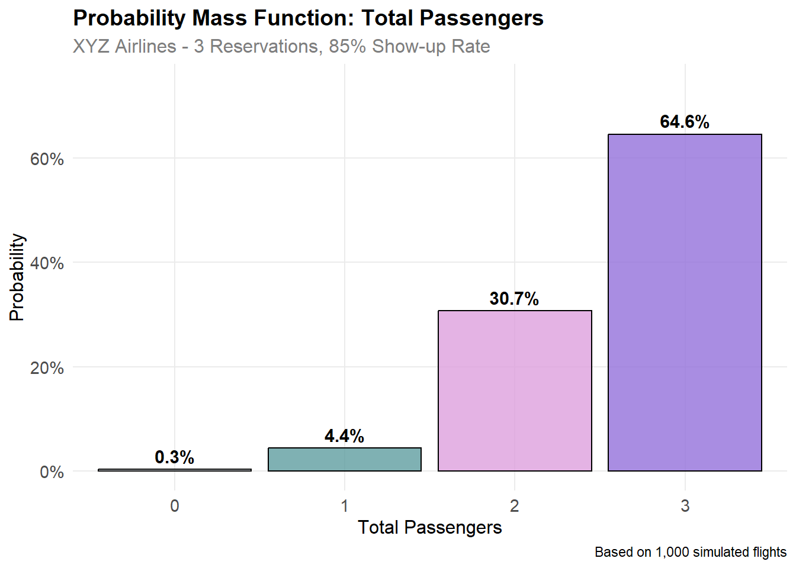
import matplotlib.pyplot as plt
import numpy as np
# Create color palette
colors = ['aliceblue', 'cadetblue', 'plum', 'mediumpurple']
# Create the plot
fig, ax = plt.subplots(figsize=(10, 6))
# Get data for plotting
passenger_counts = summaryStats['totalPassengers'].values
probabilities = summaryStats['percentage'].values / 100
# Create bars
bars = ax.bar(passenger_counts, probabilities,
color=colors, edgecolor='black', alpha=0.8, linewidth=1.2)
# Add probability labels on top of bars
for bar, prob in zip(bars, probabilities):
height = bar.get_height()
ax.text(bar.get_x() + bar.get_width()/2., height + 0.01,
f'{prob*100:.1f}%', ha='center', va='bottom',
fontsize=12, fontweight='bold')
# Customize the plot
ax.set_title('Probability Mass Function: Total Passengers\n' +
'XYZ Airlines - 3 Reservations, 85% Show-up Rate',
fontsize=14, fontweight='bold', pad=20)
ax.set_xlabel('Total Passengers', fontsize=12)
ax.set_ylabel('Probability', fontsize=12)
ax.set_xticks(passenger_counts)
ax.set_ylim(0, max(probabilities) * 1.15)(0.0, 0.71875)# Format y-axis as percentages
ax.yaxis.set_major_formatter(plt.FuncFormatter(lambda x, p: f'{x*100:.0f}%'))
# Add grid
ax.grid(True, alpha=0.3, axis='y')
ax.set_axisbelow(True)
# Add caption
fig.text(0.5, 0.02, 'Based on 1,000 simulated flights',
ha='center', fontsize=10, style='italic', color='gray')
plt.tight_layout()
plt.show()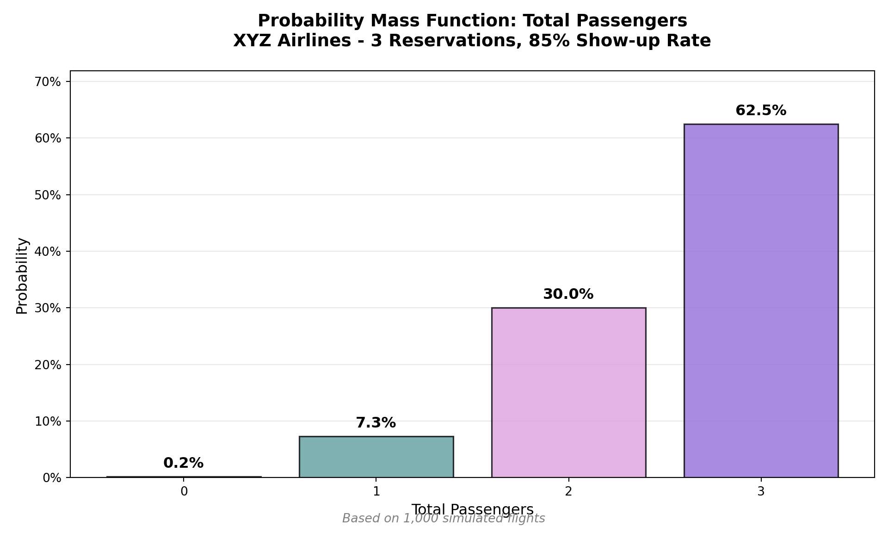
Mathematics As A Simulation Shortcut
Simulation will always be your friend in the sense that if given enough time, a simulation will always give you results that approximate mathematical exactness. The only problem with this friend is it is sometimes slow to yield representative results. In these cases, sometimes mathematics provides a shortcut. The shortcut we study here is to define a probability distribution.
Probability Distributions and Their Parameters
One cool math shortcut is to use named probability distributions. Each named distribution (e.g. Bernoulli, normal, uniform, etc.) has a set of parameters (i.e. values provided by you) that once specified tell you everything there is to know about a random variable - let’s call it \(X\). Previously, we learned that \(p\) is the one parameter of a Bernoulli distribution and it can be used to describe \(X\) as such:
\[ \textrm{Bernoulli}(p) \]
Once we give \(p\) a value, say \(p=0.4\), then we know everything there is to know about random variable \(X\). Specifically, we know its possible values (i.e. 0 or 1) and we know the probability of those values:
| Realization (\(x\)) | \(f(x)\) |
|---|---|
| 0 | \(60\%\) |
| 1 | \(40\%\) |
This is the shortcut. Once you name a distribution and supply its parameters, then its potential values and their likelihood are fully specified.
The Binomial Distribution
The two parameters of a binomial distribution map to the real-world in a fairly intuitive manner. The first parameter, \(n\), is simply the number of Bernoulli trials your random variable will model. The second parameter, \(p\), is the probability of observing success on each trial. So if \(X \equiv \textrm{number of heads in 10 coin tosses}\) and \(X \sim \textrm{Binomial}(n=10, p=0.5)\), then an outcome of \(x=4\) means that four heads were observed in 10 coin flips.
A particularly useful two-parameter distribution was derived as a generalization of a Bernoulli distribution. None other than Jacob Bernoulli himself realized that just one Bernoulli trial is sort of uninteresting (would you predict the next president by polling just one person?). Hence, he created the binomial distribution.
The binomial distribution is a two-parameter distribution. You specify the values for the two parameters and then, you know everything there is to know about a random variable which is binomially distributed. The distribution models scenarios where we are interested in the cumulative outcome of successive Bernoulli trials - something like the number of heads in multiple coin flips or the number of passengers that arrive given three reservations. More formally, a binomial distributed random variable (let’s call it \(X\)) represents the number of successes in \(n\) Bernoulli trials where each trial has success probability \(p\). \(n\) and \(p\) are the two-parameters that need to be specified.
Going back to our airplane example (Example 1), we can take advantage of the mathematical shortcut provided by the binomial distribution and use the following graphical/statistical model combination to yield exact results. The graphical model is just a simple oval:
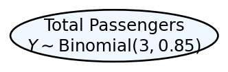
And, the statistical model is represented like this:
\[ \begin{aligned} Y &\equiv \textrm{Total number of passengers that show up.}\\ Y &\sim \textrm{Binomial}(n = 3, p = 0.85) \end{aligned} \]
For just about any named probability distribution, like the binomial distribution, both R and Python can be used to both answer questions about the probability of certain values being realized, as well as, to generate random realizations of a random variable following that distribution. We just need to know the right function to use.
foo is called a placeholder name in computer programming. The word foo itself is meaningless, but you will substitute more meaningful words in its place. In the examples here, foo will be replaced by an abbreviated probability distribution name like binom or norm.
dfoo()- is the probability mass function or the probability density function (PDF). For discrete random variables, the PDF is \(Pr(X=x)\). A user inputs \(x\) and parameters of \(X\)’s distribution, the function returns \(Pr(X=x)\). For continuous random variables, this number is less interpretable (see this Khan Academy video for more background information). Typical math notation for this function is \(f(x)\).pfoo()- is the cumulative distribution function (CDF). User inputs \(q\) and specifies parameters of the distribution, the CDF returns a probability \(p\) such that \(Pr(X \leq q)=p\). Typical math notation for this function is \(F(q)\).qfoo()- is the quantile function. User inputs \(p\) and parameters of the distribution, this returns the realization value \(q\) such that \(Pr(X \leq q) = p\). Corresponding math notation for this function is \(F^{-1}(p)\).rfoo()- is the random generation function. User inputs \(n\) and the distribution parameters, this returns \(n\) random observations of the random variable.
Take notice of the transformation from the math world to the computation world. In the math world, we might say \(Y \sim \textrm{Binomial}(n=3,p=0.85)\). But in the computation world, \(n\) is replaced by the size argument and \(p\) is replaced by the prob argument. Also notice that n is an argument of the random generation function, but it is not the same as the math-world \(n\). In the computer-world n is the number of random observations of a specified distribution that you want generated. So if you wanted 10 samples of \(Y\), you would use the function rbinom(n=10,size=3,prob=0.85) in R or np.random.binomial(n=10,size=3,p=0.85) in Python. Be careful when doing these translations.
Since we are interested in the binomial distribution, we can replace foo by binom to take advantage of the probability distribution functions listed above. For example, to answer “what is the probability there is at least one empty seat?” We find \(1 - Pr(Y=3)\) which is the same as 1 - dbinom(x=3, size = 3, prob = 0.85) in R or 1 - scipy.stats.binom.pmf(3, 3, 0.85) in Python.
To reproduce our approximated results using the exact distribution:
# transform data to give exact proportions
propExactDF = tibble(totalPassengers = 0:3) %>%
mutate(proportion =
dbinom(x = totalPassengers,
size = 3,
prob = 0.85))
# plot data with exact estimates
ggplot(propExactDF, aes(x = totalPassengers,
y = proportion)) +
geom_col(fill = "cadetblue", alpha = 0.8) +
geom_text(aes(label = round(proportion, 3)),
nudge_y = 0.03, fontface = "bold") +
labs(title = "Exact Binomial Distribution",
subtitle = "XYZ Airlines - 3 Reservations, 85% Show-up Rate",
x = "Total Passengers",
y = "Probability") +
scale_y_continuous(labels = scales::percent_format()) +
theme_minimal()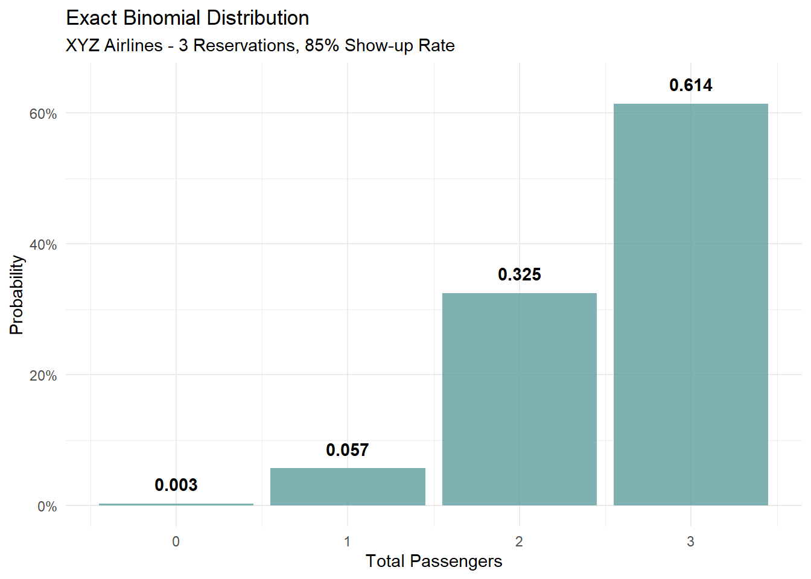
# Answer the question about empty seats
prob_no_empty_seats = dbinom(x = 3, size = 3, prob = 0.85)
prob_at_least_one_empty = 1 - prob_no_empty_seats
cat("Probability of at least one empty seat:", round(prob_at_least_one_empty, 3))Probability of at least one empty seat: 0.386from scipy import stats
import numpy as np
import pandas as pd
import matplotlib.pyplot as plt
# transform data to give exact proportions
propExactDF = pd.DataFrame({
'totalPassengers': range(4),
'proportion': [stats.binom.pmf(x, 3, 0.85) for x in range(4)]
})
# plot data with exact estimates
fig, ax = plt.subplots(figsize=(8, 5))
bars = ax.bar(propExactDF['totalPassengers'], propExactDF['proportion'],
color='cadetblue', alpha=0.8, edgecolor='black')
ax.set_title('Exact Binomial Distribution\nXYZ Airlines - 3 Reservations, 85% Show-up Rate',
fontsize=14, fontweight='bold')
ax.set_xlabel('Total Passengers', fontsize=12)
ax.set_ylabel('Probability', fontsize=12)
ax.set_xticks(range(4))
# add probability labels on bars
for bar, prob in zip(bars, propExactDF['proportion']):
height = bar.get_height()
ax.text(bar.get_x() + bar.get_width()/2., height + 0.01,
f'{prob:.3f}', ha='center', va='bottom',
fontsize=12, fontweight='bold')
# format y-axis as percentages
ax.yaxis.set_major_formatter(plt.FuncFormatter(lambda x, p: f'{x*100:.0f}%'))
ax.grid(True, alpha=0.3, axis='y')
plt.tight_layout()
plt.show()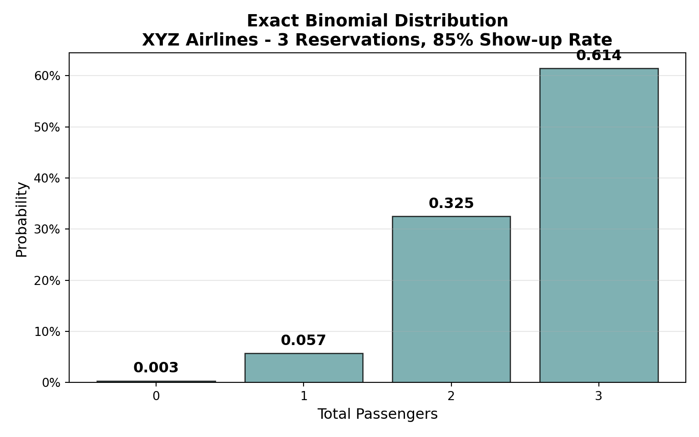
# Answer the question about empty seats
prob_no_empty_seats = stats.binom.pmf(3, 3, 0.85)
prob_at_least_one_empty = 1 - prob_no_empty_seats
print(f"Probability of at least one empty seat: {prob_at_least_one_empty:.3f}")Probability of at least one empty seat: 0.386The above code is both simpler and faster than the approximation code run earlier. In addition, it gives exact results. Hence, when we can take mathematical shortcuts, we will to save time and reduce the uncertainty in our results introduced by approximation error.
Hierarchical Parameters: When Parameters Are Random Variables
Sometimes the parameters of our distributions are themselves uncertain. Consider a scenario where we don’t know the exact show-up probability for passengers, but we know it’s somewhere between 50% and 100%.
([<matplotlib.axis.XTick object at 0x000002D9B581FEC0>, <matplotlib.axis.XTick object at 0x000002D9B580E270>], [Text(0.5, 0, '0.5'), Text(1.0, 0, '1.0')])([<matplotlib.axis.YTick object at 0x000002D9B587CB30>, <matplotlib.axis.YTick object at 0x000002D9B587F5F0>], [Text(0, 0, '0'), Text(0, 2, '2')])(0.0, 2.5)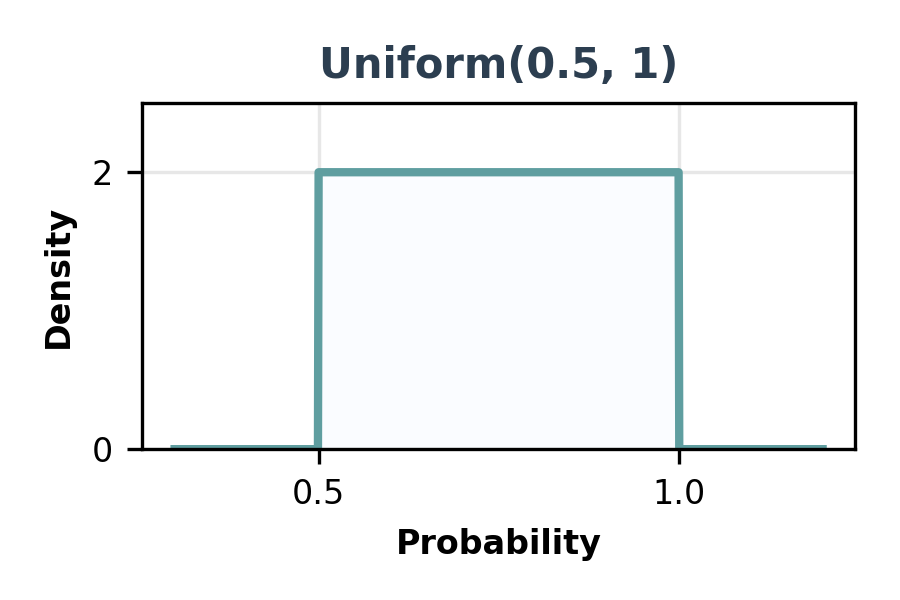
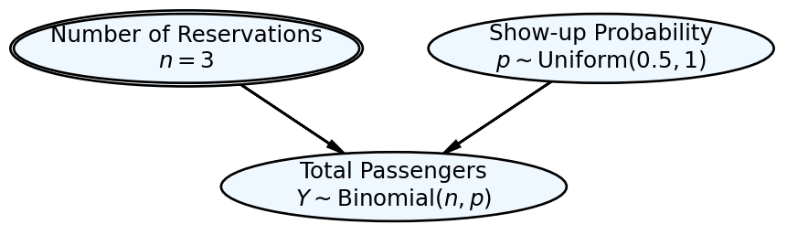
Simulation with Uncertain Parameters
library(tidyverse)
# Set seed for reproducibility
set.seed(456)
# Number of simulations
n_sims <- 1000
# Simulate the hierarchical model
hierarchical_sim <- tibble(
sim_num = 1:n_sims,
# Draw show-up probability from uniform(0.5, 1)
p = runif(n_sims, 0.5, 1),
# Draw total passengers from binomial(n=3, p)
total_passengers = rbinom(n_sims, size = 3, prob = p)
)
# Show first 10 simulations
head(hierarchical_sim, 10)# A tibble: 10 × 3
sim_num p total_passengers
<int> <dbl> <int>
1 1 0.545 2
2 2 0.605 2
3 3 0.866 3
4 4 0.926 3
5 5 0.894 3
6 6 0.666 3
7 7 0.541 1
8 8 0.643 2
9 9 0.619 3
10 10 0.693 3# Calculate empirical PMF
empirical_pmf <- hierarchical_sim %>%
count(total_passengers) %>%
mutate(probability = n / n_sims) %>%
arrange(total_passengers)
print("Empirical Probability Mass Function:")[1] "Empirical Probability Mass Function:"empirical_pmf# A tibble: 4 × 3
total_passengers n probability
<int> <int> <dbl>
1 0 27 0.027
2 1 138 0.138
3 2 354 0.354
4 3 481 0.481import numpy as np
import pandas as pd
# Set seed for reproducibility
np.random.seed(456)
# Number of simulations
n_sims = 1000
# Simulate the hierarchical model
p_values = np.random.uniform(0.5, 1, n_sims)
total_passengers = np.random.binomial(n=3, p=p_values)
hierarchical_sim = pd.DataFrame({
'sim_num': range(1, n_sims + 1),
'p': p_values,
'total_passengers': total_passengers
})
# Show first 10 simulations
print("First 10 simulations:")First 10 simulations:print(hierarchical_sim.head(10)) sim_num p total_passengers
0 1 0.624378 1
1 2 0.581533 3
2 3 0.891822 3
3 4 0.904262 3
4 5 0.812814 3
5 6 0.802057 3
6 7 0.942851 3
7 8 0.879559 3
8 9 0.590553 1
9 10 0.575085 2# Calculate empirical PMF
empirical_pmf = hierarchical_sim['total_passengers'].value_counts().sort_index()
empirical_pmf = empirical_pmf / n_sims
print("\nEmpirical Probability Mass Function:")
Empirical Probability Mass Function:print(empirical_pmf)total_passengers
0 0.041
1 0.165
2 0.359
3 0.435
Name: count, dtype: float64Visualizing the Hierarchical PMF
library(ggplot2)
# Create the plot
ggplot(empirical_pmf, aes(x = factor(total_passengers), y = probability)) +
geom_col(fill = "mediumpurple", alpha = 0.8, color = "black") +
geom_text(aes(label = paste0(round(probability*100, 1), "%")),
vjust = -0.5, size = 4, fontface = "bold") +
labs(
title = "Hierarchical Model: Total Passengers",
subtitle = "n = 3, p ~ Uniform(0.5, 1)",
x = "Total Passengers",
y = "Probability",
caption = "Based on 1,000 simulations"
) +
scale_y_continuous(labels = scales::percent_format(),
limits = c(0, max(empirical_pmf$probability) * 1.15)) +
theme_minimal() +
theme(
plot.title = element_text(size = 14, face = "bold"),
plot.subtitle = element_text(size = 12, color = "gray50"),
axis.title = element_text(size = 12),
axis.text = element_text(size = 11)
)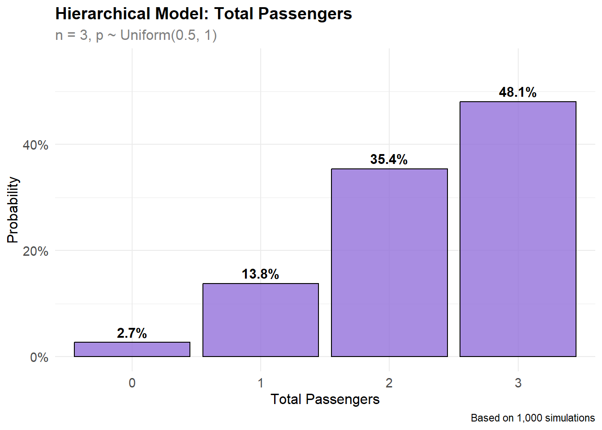
import matplotlib.pyplot as plt
# Create the plot
fig, ax = plt.subplots(figsize=(8, 5))
# Get data for plotting
passenger_counts = empirical_pmf.index.values
probabilities = empirical_pmf.values
# Create bars
bars = ax.bar(passenger_counts, probabilities,
color='mediumpurple', alpha=0.8, edgecolor='black', linewidth=1.2)
# Add probability labels on top of bars
for bar, prob in zip(bars, probabilities):
height = bar.get_height()
ax.text(bar.get_x() + bar.get_width()/2., height + 0.01,
f'{prob*100:.1f}%', ha='center', va='bottom',
fontsize=12, fontweight='bold')
# Customize the plot
ax.set_title('Hierarchical Model: Total Passengers\nn = 3, p ~ Uniform(0.5, 1)',
fontsize=14, fontweight='bold', pad=20)
ax.set_xlabel('Total Passengers', fontsize=12)
ax.set_ylabel('Probability', fontsize=12)
ax.set_xticks(passenger_counts)
ax.set_ylim(0, max(probabilities) * 1.15)(0.0, 0.50025)# Format y-axis as percentages
ax.yaxis.set_major_formatter(plt.FuncFormatter(lambda x, p: f'{x*100:.0f}%'))
# Add grid
ax.grid(True, alpha=0.3, axis='y')
ax.set_axisbelow(True)
# Add caption
fig.text(0.5, 0.02, 'Based on 1,000 simulations',
ha='center', fontsize=10, style='italic', color='gray')
plt.tight_layout()
plt.show()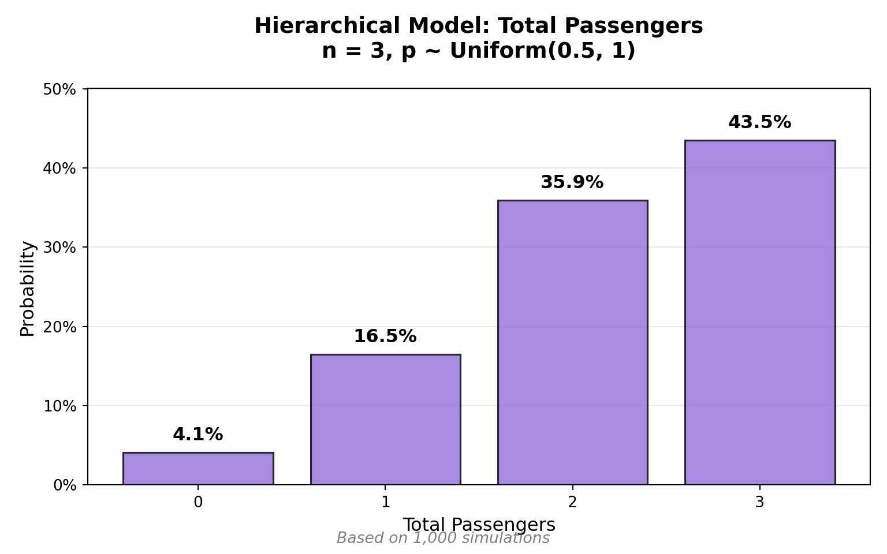
Notice how the hierarchical model creates a different distribution compared to the fixed parameter case. The uncertainty in the show-up probability propagates through to create more variability in the total number of passengers.
Appendix: DAG Drawing Notes
Note to ourselves: We use a custom DAG class (inherits from daft.PGM) with three specialized node methods:
latentNode()- aliceblue background, aspect=4observedNode()- purple background, aspect=4
deterministicNode()- aliceblue background, aspect=5.4, alternate=True
The class includes a truth attribute and uses partialmethod to create these node methods with custom defaults.
Installation: pip install 'daft-pgm'
import daft
from functools import partialmethod
class DAG(daft.PGM):
def __init__(self, *args, **kwargs):
daft.PGM.__init__(self, *args, **kwargs)
self.truth = "The most compelling analysts unify narrative, math, and code."
latentNode = partialmethod(daft.PGM.add_node, aspect = 4, fontsize = 9.25, plot_params = {'facecolor': 'aliceblue'})
observedNode = partialmethod(daft.PGM.add_node, aspect = 4, fontsize = 9.25, plot_params = {'facecolor': 'thistle'})
deterministicNode = partialmethod(daft.PGM.add_node, aspect = 5.4, fontsize = 9.25, alternate = True, plot_params = {'facecolor': 'aliceblue'})
newpgm = DAG(dpi = 150, alternate_style="outer")
newpgm.observedNode("rev","Rev. Function\n"+r"$(rev)$",x = 0, y = 1)'rev'newpgm.observedNode("exp","Exp. Function\n"+r"$(exp)$",x = 3, y = 1)'exp'newpgm.deterministicNode("profit","Profit Function\n"+r"$(\pi = rev- exp)$",x = 1.5, y = 0)'profit'newpgm.add_edge("rev","profit")<daft._core.Edge object at 0x000002D9B5842F00>newpgm.add_edge("exp","profit")<daft._core.Edge object at 0x000002D9B5896BD0>newpgm.show()
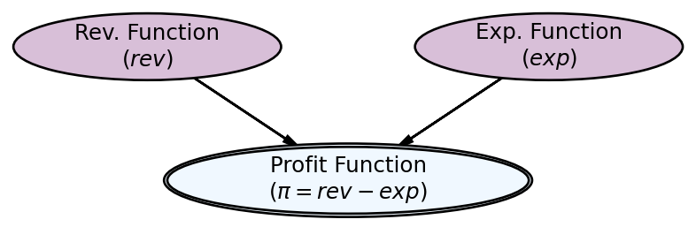
Appendix: Example DAGs with DAFT
Simple Bernoulli Random Variable
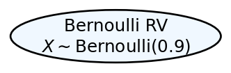
Canonical Example for Simulation
Example 2 Imagine you are offered the following game and given a $1,000 budget in a special account to play the game: I will flip a coin, and if it comes up heads, we increase your account’s balance by 50%; if it comes up tails, we reduce your account’s balance by 40%. We are not only doing this once, but we will do it once per year until you turn 55. When you turn 55, you will receive the balance in your account.
Minimum Requirements for Any Points on Challenge
- You must write a concise quarto markdown file that includes a narrative of what you are doing along with the requested code, results, and visualizations of your simulations.
- You must render the quarto markdown file to HTML.
- The rendered HTML must be uploaded to a new GitHub repository called “simulationChallenge” in your Github account.
- The repository should be made the source of your github pages:
- Go to your repository settings (click the “Settings” tab in your GitHub repository)
- Scroll down to the “Pages” section in the left sidebar
- Under “Source”, select “Deploy from a branch”
- Choose “main” branch and “/ (root)” folder
- Click “Save”
- Your site will be available at:
https://[your-username].github.io/simulationChallenge/ - Note: It may take a few minutes for the site to become available after enabling Pages
Questions to Answer for 75% Grade on Challenge
- What is the “expected value” of your account balance after 1 coin flip?
- Is the expected value positive or negative? Do you expect your account to be worth more or less than $1,000 based on this result?
- Run one simulation showing the dynamics of your account balance over time. Make an object-oriented matplotlib OR ggplot2 plot showing your simulated account balance over time (i.e. as you age). Comment on the results, are you happy?
Questions to Answer for 85% Grade on Challenge
- Run 100 simulations showing the dynamics of your account balance over time. Make an object-oriented matplotlib OR ggplot2 plot showing a probability distribution of account balance at age 55. Comment on the results, are you happy? Why or why not?
Questions to Answer for 95% Grade on Challenge
- Based on the 100 simulations above, what is the probability that your account balance will be greater than $1,000 at age 55?
Questions to Answer for 100% Grade on Challenge
- Run 100 simulations for the modified Example 3 shown below, what is the probability that your account balance will be greater than $10,000 at age 55? Is this probability higher or lower than the probability in the original game?
Example 3 Imagine you are offered the following game and given a $1,000 budget in a special account to play the game: I will flip a coin, and if it comes up heads, we increase your bet by 50%; if it comes up tails, we reduce your bet by 40%. You must bet exactly 50% of your current account balance on each flip, and this 50% is locked in for each round. We are not only doing this once, but we will do it once per year until you turn 55. When you turn 55, you will receive the balance in your account.